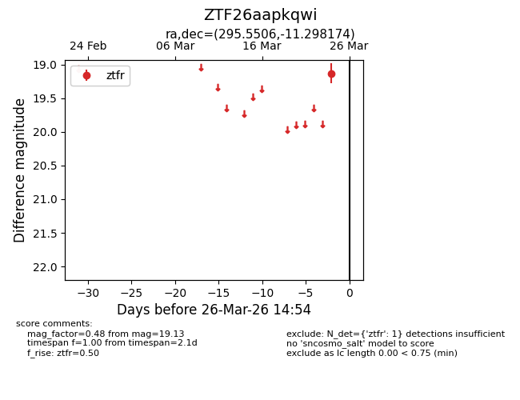
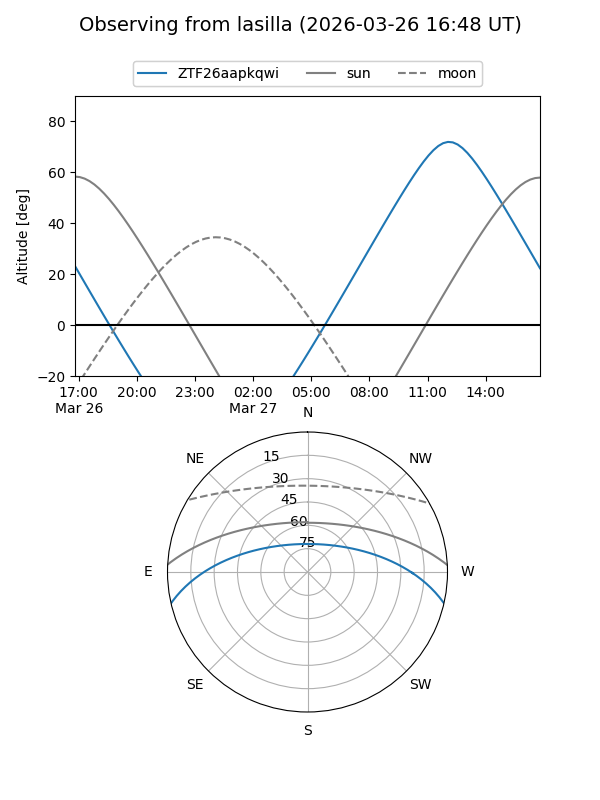
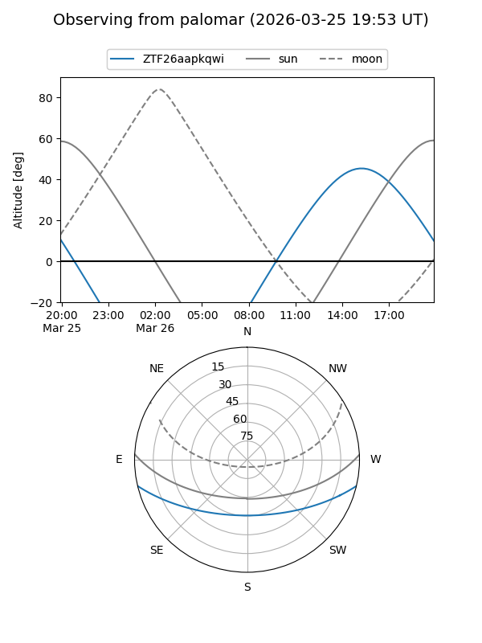

ZTF26aapkqwi
Target ZTF26aapkqwi at 2026-03-26 14:56
Aliases and brokers:
FINK: link
Lasair: link
ALeRCE: link
alt names
ZTF26aapkqwi (ztf,fink_ztf)
Coordinates:
equatorial (ra, dec) = 295.5506,-11.29817
equatorial (HMS+DMS) = 19:42:12.15,-11:17:53.43
galactic (l, b) = (28.3822,-16.32415)
Flags:
Photometry:
last ztfr=19.13
1 ztfr detections
Lightcurve

Visibility


Additional plots